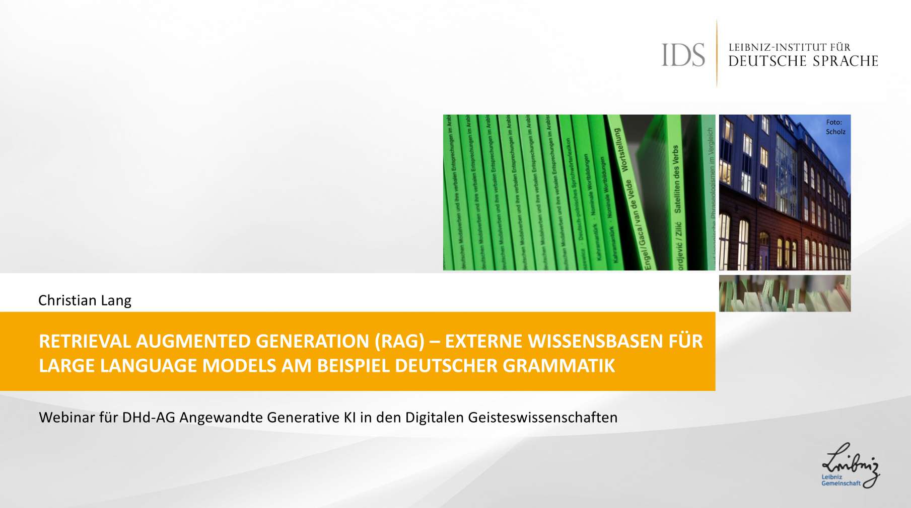
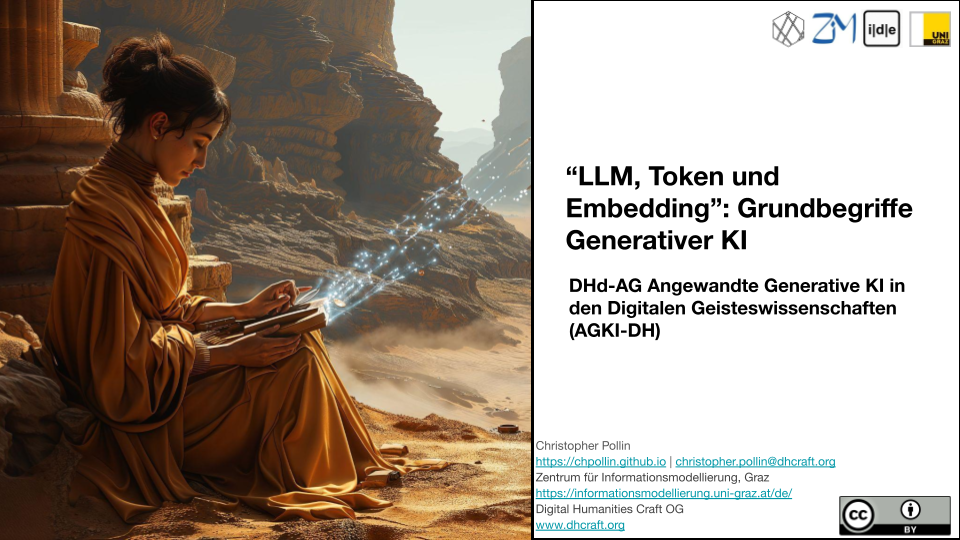
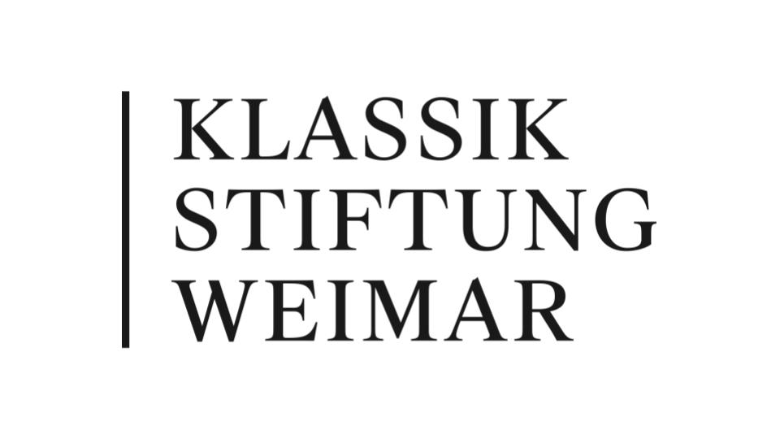

DHd-AG Angewandte Generative KI in den Digitalen Geisteswissenschaften (AGKI-DH)
Die AG widmet sich der Erforschung und Anwendung generativer KI, insbesondere von Large Language Models (LLMs), in den digitalen Geisteswissenschaften.
Webinare (Zum Zoom)
Über Prompt Brittleness, Prompt Generalisierbarkeit und Prompt Optimierung. Erste Erkenntnisse aus Fallstudien in den Computational Literary Studies
(Janis Pagel; Axel Pichler; Nils Reiter)
20.11.2024
Meet ParzivAI and McgAIver - LLM-Finetuning praktisch gemacht
(Florian Nieser, Thomas Renkert)
30.10.2024
Eine praktische Einführung in LangChain. Eine Live-Demonstration
(Suzana Sagadin)
23.10.2024
Prinzipien der KI-Ethik für generative KI in den Digital Humanities (Paul Näger)
09.10.2024
NLP und LLM (Nina Rastinger, Lucija Krusic, Martina Scholger)
25.09.2024

In 10 Schritten zur KI-Suche LLM-Projekte aus Projektmanagersicht (Thomas Jäger)
17.09.2024

Retrieval Augmented Generation (RAG) – Externe Wissensbasen für Large Language Models am Beispiel deutscher Grammatik (Christian Lang)
29.05.2024
IDE-Integration of Github Copilot. Jetbrains IDEs (Sebastian Schiller-Stoff)
15.05.2024


"LLM, Token und Embedding": Grundbegriffe Generativer KI (Christopher Pollin)
12.04.2024
Aktivitäten

Workshop „(Generative) KI für Kultur- und Textdaten“
04.–05. November 2024
Meeting der DHd-AG Angewandte Generative KI in den Digitalen Geisteswissenschaften (AGKI-DH)
19.03.2024